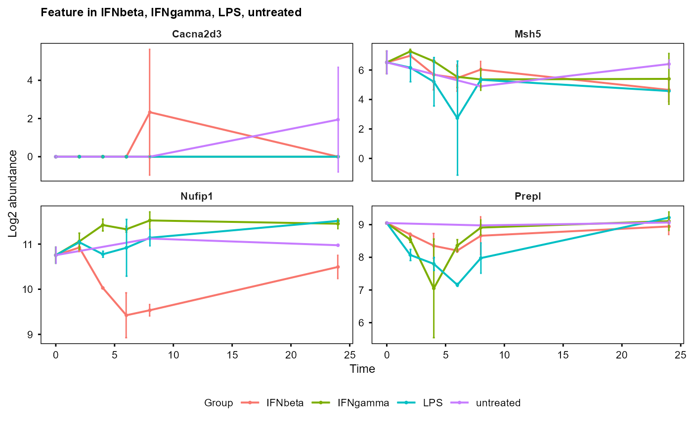
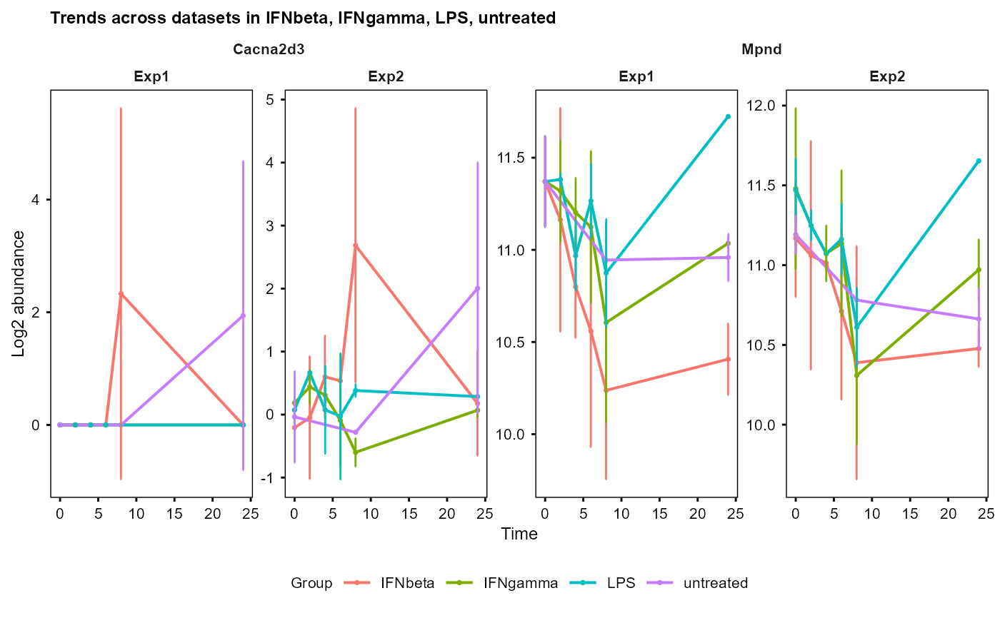

Plot trend of feature abundances / expression over time by
mean and standard deviation (SD) for each group. Accepts either a
SummarizedExperiment object (computing mean/SD internally via
calc_mean_sd()), a pre-computed table from calc_mean_sd(), or a
named list of SummarizedExperiment objects (multiple datasets,
e.g. multiomics).
Usage
plot_trend(
se_obj,
assay = 1,
groups = NULL,
features,
title = NULL,
ylabel = "Log2 abundance",
errorbar = TRUE,
fontsize = 8,
multi_layout = c("wrap", "vertical", "horizontal", "overlay"),
ncol = NULL,
independent_y = TRUE
)Arguments
- se_obj
A SummarizedExperiment object, a data.frame from
calc_mean_sd()with columns: Feature, Time, Group, Mean, SD, or a named list of SummarizedExperiment objects (multiple datasets, e.g. multiomics).- assay
The assay to use in the SummarizedExperiment object: a numeric index or character name, e.g. 1 or "orig" for original data, 2 or "norm" for time 0 normalised data. (Default: 1.)
- groups
Groups to be plotted, if NULL, all groups will be used (default is NULL)
- features
Features to be plotted, if NULL, an error will be raised
- title
Title of the plot. "Feature" if NULL (default) for single input, "Trends across datasets" if NULL for a named list of SummarizedExperiment objects.
- ylabel
Y axis label of the plot (default is "Log2 abundance").
- errorbar
Whether to plot error bars (default is TRUE)
- fontsize
Font size for the plot (default is 8)
- multi_layout
Facet layout for multiple-datasets input:
"wrap"(default): wraps features, datasets nested per feature;"vertical": datasets as rows, features as columns;"horizontal": features as rows, datasets as columns;"overlay": one panel per feature, datasets by linetype. Ignored for single input.- ncol
Number of feature columns per row for
"wrap"and"overlay"layouts (multiple datasets) or infacet_wrap()(single input). If NULL (default), auto-computed.- independent_y
If TRUE (default), each panel gets its own y-axis scale. If FALSE, y-axes are shared: within each facet row for "vertical" and "horizontal" layouts, fully for "wrap" and "overlay".
Examples
data(example_obj)
data(example_obj_2)
plot_trend(example_obj,
features = sample(rownames(example_obj), 4))
#> Group not specified. Plotting all groups: IFNbeta, IFNgamma, LPS, untreated

# Also accepts a named list of SummarizedExperiment objects
plot_trend(list(Exp1 = example_obj, Exp2 = example_obj_2),
features = sample(rownames(example_obj), 2))
#> Group not specified. Plotting all groups: IFNbeta, IFNgamma, LPS, untreated
